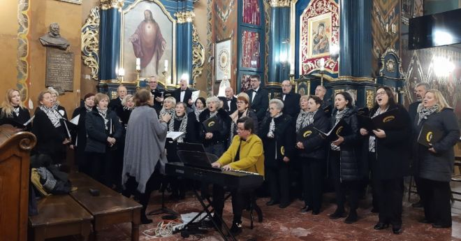
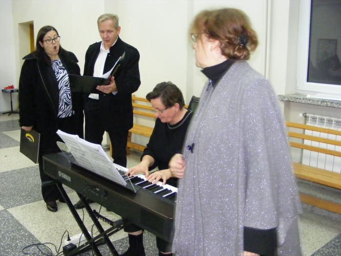
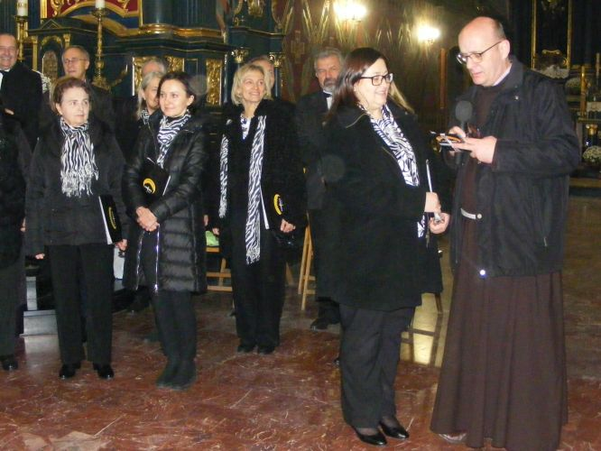

A tymczasem w Cameracie...
.
2022-11-20
20 listopada 2022 roku w niedzielę Jezusa Chrystusa Króla Wszechświata, w ramach obchodów naszego jubileuszu 25-lecia oraz dla uczczenia patronki śpiewu chóralnego – św. Cecylii wystąpiliśmy z repertuarem Sacrum, upiększając śpiewem liturgię Mszy św. w Sanktuarium Matki Bożej Łaskawej Księżnej Wieliczki. Na organach towarzyszyła nam Pani Agnieszka Korczyńska.
W sposób szczególny należy wyróżnić pierwszy solowy śpiew naszej Pani Prezes Magdy Thomas, która wraz ze swoim małżonkiem Janem wykonała psalm oraz aklamację. Z kolei w "Panis Angelicus” towarzyszyła nam skrzypaczka, uczennica Zespołu Szkół Muzycznych w Wieliczce, Jadwiga Korab Chrzanowska.

Po Mszy św. Camerata pod dyrekcją Izabeli Szoty zaśpiewała kilka utworów, życząc licznie zebranej publiczności miłości i pokoju.
Słowa Ojca Eryka ”przychodźcie śpiewać nawet bez zaproszenia” były dla nas najlepszym podziękowaniem.

Tekst Izabela Szota

© Stowarzyszenie Muzyczne Chór Camerata Wieliczka
Prowadzenie strony oraz zdjęcia: Małgorzata Wysocka